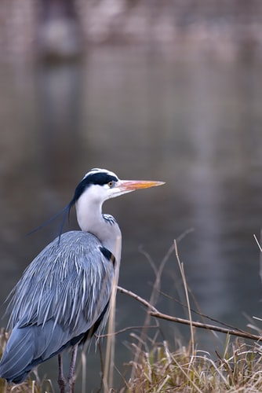

<div class="posts">
	<article class = 'page'>
		<div class = 'entry'>
			<div class = 'intro'>
			
				<div class = 'intro-paragraph'>
					<h2>Mechanical Engineer</h2>
					<p>
						I'm Xiaoyao, a Mechanical Engineering student at 
						Rice University, minoring in Engineering Design.
						Making things is my hobby, whether that be creating
						mechanical designs, tinkering with Arduinos, or
						coding interactive programs. 
					</p>
					<p>
						I have experience working across many stages in the 
						engineering life-cycle. I am especially interested 
						in mechatronics, robotics, and human-centered design.
					<p>
						Find out more information about me and my past 
						projects by exploring the website.
						Thanks for stopping by!
					</p>
				</div>
			</div>
		</div>
	</article>

</div>
